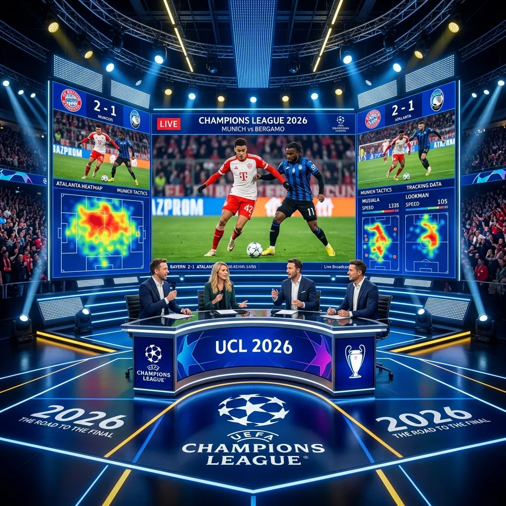

Bayern Munich's Masterclass: Analyzing the 10-2 Aggregate Win vs. Atalanta

Bayern Munich sent a frightening message to Europe with a dominant 10-2 aggregate victory over Atalanta, establishing themselves as the clear favorites for the 2026 Champions League title.
On March 18, 2026, the second leg of this Round of 16 encounter took place at the Allianz Arena, and it was less of a contest than it was a coronation. A clinical 4-1 victory on the night, following a 6-1 thrashing in the first leg, showed that Bayern are performing at a level that few, if any, teams in world football can match. For tactical analysts and fans who demand the ultimate viewing experience, this series was a goldmine of data and high-quality footballing action. To truly appreciate the speed and precision of the Bayern machine, a multi-stream surveillance of the entire 180-minute series was essential.
A Tale of Two Legs: Dismantling Serie A's Most Offensive Side
Atalanta, known for their high-risk, "man-to-man" pressing system and explosive attacking talent under Gian Piero Gasperini, were expected to challenge Bayern. However, the first leg in Bergamo set a tone that would persist throughout the series. Bayern's ability to absorb the initial Atalanta press and then strike with lethal efficiency on the counter-attack resulted in a 6-1 victory that effectively ended the tie as a competitive spectacle. The return leg in Munich was simply an opportunity for Bayern to further demonstrate their superiority.
Watching both legs simultaneously—using YoutubeMulti to side-by-side the highlights of the first leg with the live second leg—offered a unique perspective on tactical consistency. You could see how Xabi Alonso (or the current manager in this hypothetical 2026) made subtle adjustments to the pressing patterns of Leroy Sane and Jamal Musiala between the two games. Bayern’s ability to remain so consistently dominant over 180 minutes against a side as competent as Atalanta is a testament to their preparation and the depth of their world-class squad.
Tactical Breakdown: Fluid Positional Play vs. Defensive Overload
Bayern's tactical setup was a masterclass in fluidity. Nominally playing a 4-2-3-1, the system often shifted into a 2-3-5 or 3-2-5 in possession. The fullbacks, Alphonso Davies and Joshua Kimmich, inverted frequently, allowing the wingers to remain high and wide. This forced the Atalanta backline to stretch, creating massive gaps in the half-spaces that Jamal Musiala and Harry Kane exploited with surgical precision. The "Defensive Overload" that Bayern created in the final third was simply too much for any defense to handle.
Atalanta’s man-to-man system, which has been so effective in Serie A, became their undoing against Bayern. Every time an Atalanta player stepped out of position to press a Bayern midfielder, a run was made from deep by Kingsley Coman or Serge Gnabry. For fans who want to see these movements in real-time, accessing a 24/7 tactical "bird's eye view" is the only way to truly appreciate the sophistication of Bayern's movement. A single broadcast feed often focuses too closely on the player with the ball, missing the crucial off-ball runs that define Bayern’s attacking philosophy.
The Stars of the Show: Musiala, Kane, and Sane’s Synergy
The synergy between Jamal Musiala, Harry Kane, and Leroy Sane was the highlight of the series. Harry Kane, acting both as a clinical finisher and a deep-lying playmaker, orchestrated many of the transitions. His vision to play Sane and Musiala through on goal was something to behold. Over the two legs, these three players alone contributed significantly to the 10-goal tally, showing that Bayern possesses the most potent attacking trio in world football in 2026.
For fans who want to focus on their favorite individual stars, YoutubeMulti’s "Player Surveillance" dashboard is the ultimate tool. Dedicating one tile to an individual player-cam for Musiala allowed for a deeper appreciation of his close control and ability to navigate tight spaces. Seeing his spatial awareness update live—watching him consistently find the "pocket" between the Atalanta midfield and defense—was a highlight for any student of tactical play.
Analyzing Historical Dominance: Multi-Stream Statistics with YoutubeMulti
A 10-2 aggregate score is historical. It ranks among the most dominant Round of 16 performances in Champions League history. To understand how such a margin is achieved, you need more than just the scoreline. You need the data. YoutubeMulti allows fans to aggregate live statistics alongside the match broadcast for a total-immersion experience.
How to Build Your Scouting Dashboard for the Quarterfinals
- Main Tile: The primary High-Definition broadcast of the match at the Allianz Arena.
- Tile 2: A live xG (Expected Goals) dashboard, showing the quality of chances Bayern is creating vs. the quality they are conceding.
- Tile 3: A rolling feed of all 10 goals from the series, for quick reference and analysis of common defensive failures in the opponent.
- Tile 4: Live tactical maps showing the average positions of Harry Kane compared to traditional strikers—highlighting his unique role in Xabi Alonso's system.
- Tile 5: A side-by-side feed of potential quarterfinal opponents (e.g., Real Madrid or Manchester City) playing their own CL matches.
The Road Ahead: Real Madrid and the Quest for European Glory
As Bayern moves into the quarterfinals, the narrative shifts toward their eventual collision with Real Madrid. The 10-2 victory over Atalanta was a statement, but the next round will be the true test. Real Madrid’s individual quality and historic Champions League DNA pose a challenge far greater than anything Atalanta could offer. Bayern’s quest for their next European trophy hinges on their ability to maintain this level of performance against the elite of the elite.
To prepare for that quarterfinal "Final before the Final," fans should be building their scouting grids now. Comparing Bayern’s recent performances in the Bundesliga alongside Real Madrid’s La Liga fixtures in one multi-view interface is the best way to spot tactical vulnerabilities. Is Alphonso Davies vulnerable to a fast transition if he pushes too high? How does Real Madrid's midfield cope with a team that plays with inverted fullbacks like Bayern? These are the questions that define a true tactical enthusiast.
Conclusion: Bayern’s European Credentials Are Unquestionable
The 2026 Round of 16 series between Bayern Munich and Atalanta was a landmark moment for the German champions. It was a 180-minute display of tactical brilliance, individual excellence, and collective focus. By utilizing advanced multi-stream monitoring tools like YoutubeMulti, fans can ensure they are part of the conversation on the forefront of tactical analysis. Don't just watch the game—analyze the masterclass, and prepare for the next chapter in European football history.